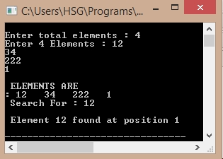

/*C Program forInterpolationSearch*/
#include<stdio.h>
#include<stdlib.h>
#define MAX 200
int interpolation_search(int a[], int bottom, int top, int item)
{
int mid;
while (bottom <= top)
{
mid = bottom + (top - bottom)* ((item - a[bottom]) / (a[top] - a[bottom]));
if (item == a[mid])
return mid + 1;
if (item < a[mid])
top = mid - 1;
else
bottom = mid + 1;
}
return -1;
}
int main() {
int arr[MAX];
int i, num;
int item, pos;
printf("\nEnter total elements: ", MAX);
scanf("%d", &num);
printf("Enter %d Elements : ", num);
for (i = 0; i < num; i++)
scanf("%d", &arr[i]);
printf("\n ELEMENTS ARE\n: ");
for (i = 0; i < num; i++)
printf("%d ", arr[i]);
printf("\n Search for : ");
scanf("%d", &item);
pos = interpolation_search(&arr[0], 0, num, item);
if (pos == -1)
printf("\n Element %d not found \n", item);
else
printf("\n Element %d found at position %d \n", item, pos);
return 0;
}
Output:
